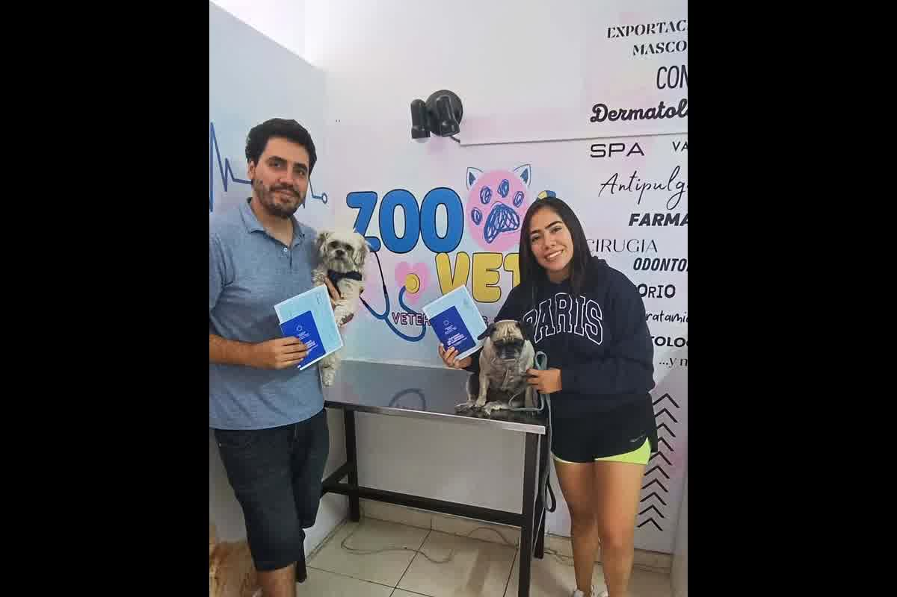
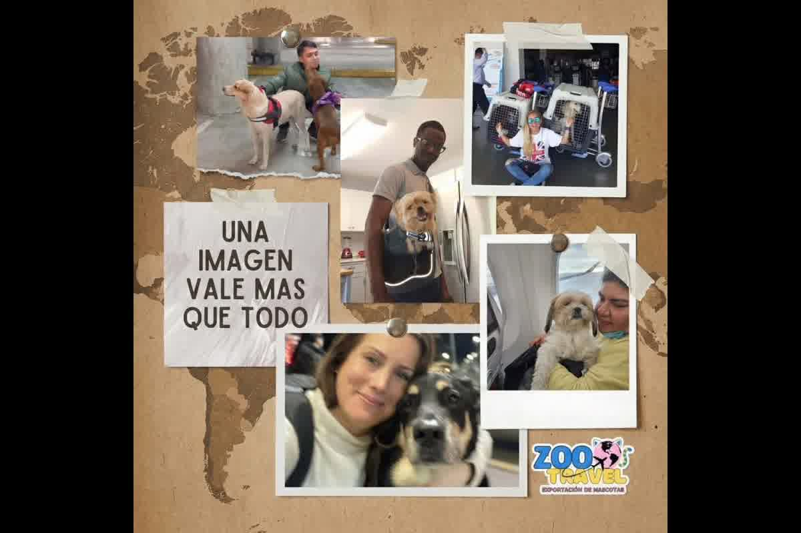

Guide technique de la Dre Jessica Camacho sur l'importance des vétérinaires spécialisés en voyages internationaux à Trujillo, Pérou pour des processus d'exportation fiables.

La validité d'un processus d'exportation animale ne repose pas sur la bonne foi du clinicien mais sur la précision technique avec laquelle la chaîne de traçabilité sanitaire est construite. Confier le dossier à des vétérinaires spécialisés en voyages internationaux à Trujillo, Pérou est la seule façon de garantir que le numéro de puce, la date de vaccination et les délais d'attente sérologiques correspondent à la matrice réglementaire de la destination. À Trujillo nous recevons des familles avec billets déjà achetés qui découvrent trop tard que leur vétérinaire de confiance a omis l'ordre chronologique exigé par l'Union européenne ou le Japon.
Le vétérinaire dédié à la pratique conventionnelle priorise le diagnostic et le traitement des pathologies, mais la médecine d'exportation exige une spécialisation en droit sanitaire international et logistique biologique. Un clinicien sans formation spécifique ignore souvent que la vaccination antirabique conforme aux exigences réglementaires internationales perd sa validité légale si elle est appliquée une minute avant la lecture ou l'implantation de la transpondeur conforme ISO 11784/11785 FDX-B 11784/11785. Ce manque de rigueur documentaire invalide tout le dossier devant le SENASA, forçant la répétition des protocoles et le report indéfini du déménagement familial.
Les vétérinaires spécialisés en voyages internationaux à Trujillo, Pérou opèrent selon une taxonomie de l'erreur basée sur la réversibilité documentaire. Chaque traitement antiparasitaire doit être enregistré avec marque, lot et date exacte, en s'assurant que la fenêtre d'application corresponde aux exigences de pays comme le Chili ou le Royaume-Uni.

La manipulation des prélèvements pour la titration des anticorps neutralisants de la rage (RNATT) exige une logistique de chaîne du froid et une gestion douanière que la plupart des cabinets locaux ne peuvent exécuter. Le sérum doit parvenir à des laboratoires accrédités aux États-Unis ou en Europe sans hémolyse et avec une documentation reliant de façon univoque l'échantillon à la micropuce du patient. Les vétérinaires spécialisés en voyages internationaux à Trujillo, Pérou connaissent les délais de traitement et les périodes d'attente de 90 ou 180 jours imposées par les destinations à haute surveillance sanitaire.
Un résultat inférieur à 0,5 UI/mL n'indique pas toujours une défaillance biologique de l'animal ; il résulte souvent d'un intervalle de prélèvement incorrect ou d'une manipulation déficiente au cabinet. La spécialisation permet d'identifier le moment optimal pour le prélèvement après la primovaccination, en réduisant le risque de résultats négatifs qui obligent à recommencer le décompte des mois. Dans notre siège de Trujillo nous auditons la réponse immunitaire préalable pour garantir que l'envoi international de l'échantillon soit une démarche à très haute probabilité de succès réglementaire.
La sécurité de l'animal en soute dépend d'une évaluation physiologique qui va au-delà d'un simple bilan de santé. Seuls les vétérinaires spécialisés en voyages internationaux à Trujillo, Pérou ont le critère pour évaluer si un patient brachycéphale ou gériatrique peut tolérer l'hypoxie légère en cabine et le stress métabolique du transport. Émettre un certificat sanitaire sans tenir compte de l'altitude équivalente du vol ou des restrictions de température au sol constitue une négligence qui met en danger la vie de l'animal pendant le transit.
L'audit technique comprend la vérification du conteneur selon les normes IATA LAR, en s'assurant que l'espace permette la thermorégulation et la posture naturelle. La sédation, souvent suggérée dans les cliniques non spécialisées, est contre-indiquée en raison du risque de collapsus respiratoire en altitude. La préparation correcte repose sur le conditionnement éthologique et la stabilisation du microbiote intestinal pour atténuer l'impact du cortisol, protocole mis en œuvre uniquement dans les centres dédiés exclusivement au mouvement international des animaux.
La vérification des exigences d'importation doit être effectuée directement auprès des sources primaires de chaque pays, la réglementation variant considérablement selon la classification de risque du Pérou. En août 2024 le CDC a modifié l'entrée des chiens aux États-Unis, mise à jour qui a invalidé les processus de ceux sans conseil spécialisé à jour. Les vétérinaires spécialisés en voyages internationaux à Trujillo, Pérou consultent quotidiennement les portails officiels (MAPA, APHIS, DAFF) pour aligner les calendriers sanitaires sur la réalité réglementaire du jour.
Le paiement des redevances au SENASA et la gestion via la Fenêtre unique du commerce extérieur (VUCE) exigent une précision administrative pour éviter les écarts entre le propriétaire enregistré et le passager qui voyage. Le bureau régional de La Libertad exige que le certificat vétérinaire officiel d'exportation (CZE, certificat sanitaire) soit traité et endossé dans des fenêtres temporelles très étroites avant le vol. Bénéficier d'un accompagnement professionnel à Trujillo garantit que l'inspection physique obligatoire soit une étape fluide et non un point de conflit pour documents mal foliotés ou traitements hors délai.
La traçabilité totale est atteinte lorsque le vétérinaire assume la responsabilité de la chaîne documentaire du premier jour jusqu'au visa officiel. L'improvisation dans les registres de déparasitation ou l'absence d'étiquettes d'origine de la puce sur le carnet sont des manquements que les inspecteurs des douanes ne négligent pas. La spécialisation garantit que chaque donnée consignée dans le dossier ait un fondement technique vérifiable, permettant à la famille de se concentrer sur son déménagement tandis que le professionnel assure la viabilité juridique du transport de l'animal.
Une incohérence sur une seule donnée du dossier sanitaire entraînera la déportation de votre animal ou son rejet immédiat à l'aéroport. Zoovet Travel opère depuis 12 ans comme vétérinaires spécialisés en voyages internationaux à Trujillo, Pérou, en traitant des cas au niveau national et international avec une rigueur infaillible. Gérez votre exportation en toute sécurité à notre siège, El Recreo, Trujillo, ou contactez-nous au , ou . Assurez l'avenir de votre compagnon avec l'autorité technique que seule une réelle expérience peut offrir.